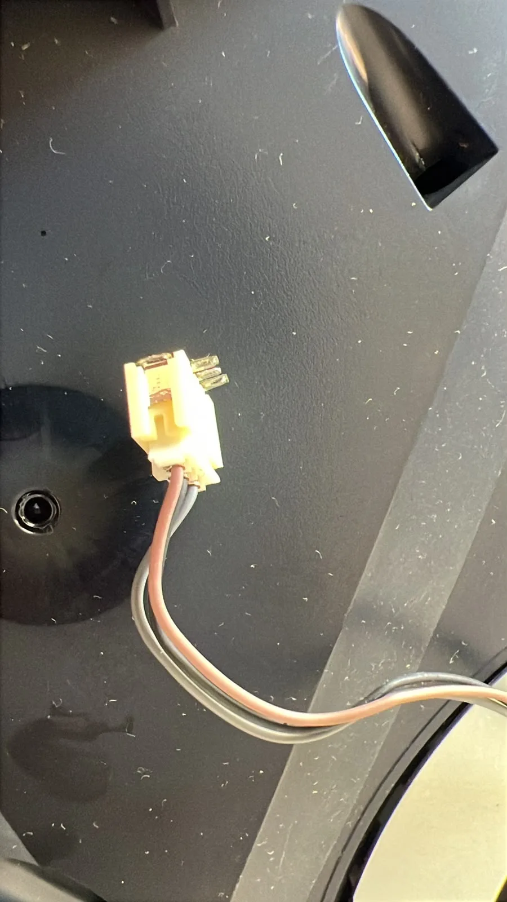

PLAYSTATION 5 / REFRIGERACIÓNCAMBIO DE
CAMBIO DE
METAL LÍQUIDO.
Intervención interna en PS5 con acceso al sistema térmico y renovación del material de transferencia.
VÍDEO REAL · TALLER DOCTOR PLAY
Una selección de equipos y reparaciones que han pasado por el taller: desde conectores y refrigeración hasta mandos, portátiles gaming y consolas retro.
Fotos y vídeo propios de Doctor Play. Cada intervención se revisa, se trabaja sobre el fallo y se prueba antes de la entrega.
Intervención interna en PS5 con acceso al sistema térmico y renovación del material de transferencia.
VÍDEO REAL · TALLER DOCTOR PLAY
Diagnóstico y trabajo sobre la zona del puerto de vídeo.

Revisión de conector, cableado y alimentación del sistema de refrigeración.

Trabajo de precisión sobre placa y componentes de pequeño formato.

Sustitución y ajuste de módulos de joystick para recuperar precisión y respuesta.

Desmontaje, sustitución de componentes y comprobación del control.

Limpieza, revisión del sistema térmico y montaje con pruebas finales.

Acceso interno, diagnóstico de hardware y revisión de refrigeración y conexiones.

Equipo encendido y comprobado después de la intervención.

Revisión de hardware clásico y recuperación de equipos con historia.
Envíanos el modelo y los síntomas por WhatsApp y te orientamos.
ENVIAR CONSULTA ↗